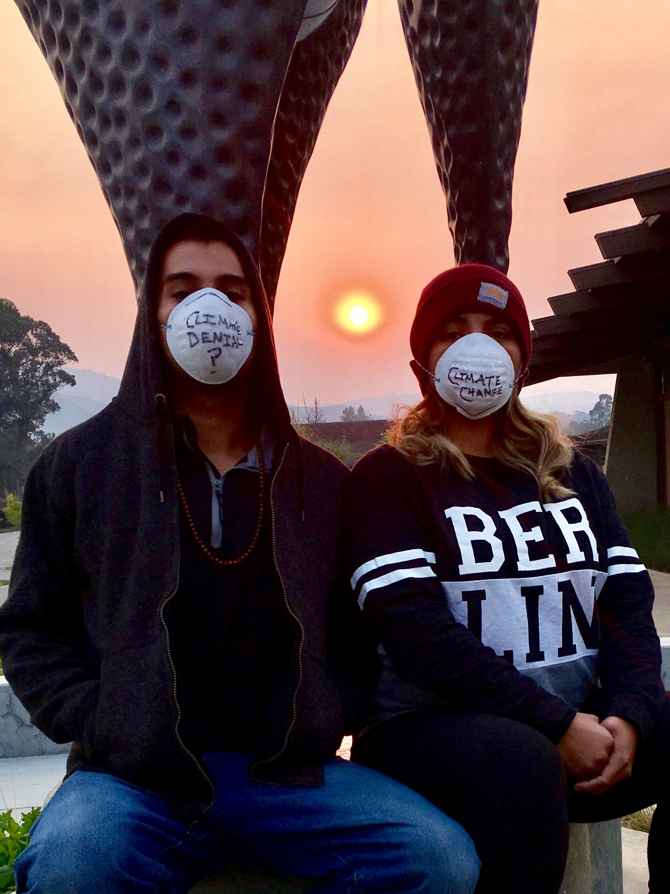

The NFL in the Anthropocene: football, climate change, Generation-A, and high-tech hell
Scott Lankford, Nov 18,2018

Forget brain injury trauma and taking-a-knee. On November 12 2018, Monday Night Football shoved the NFL coughing and choking into the Anthropocene Era.
That’s because last week’s MNF marked the first — not the last — time we faced the spectacle of thousands of screaming football fans wearing industrial breathing filter masks, cheering smoke-choked athletes sucking on artificial oxygen in a state-of-the art stadium soon scheduled to be underwater due to sea-level rise.
So for once it wasn’t just the colorful contest between SF’s new 23-year-old rookie QB and an iconic athlete nearly twice his age that riveted our collective national attention. Although I’ll admit that particular gridiron battle did end in a down-to-the-final-seconds nail-biter.
Instead it was the intergenerational battle for planetary survival that held center stage in the smokey, soot-blackened face of what California Governor Jerry Brown aptly calls “The New Abnormal.”
Forget face-masking penalties on the field. These days even taking-a-breath in the beautiful Bay Area will be severely penalized. With the largest and most destructive fire in California history roaring on a few hundred miles away near Chico, San Francisco’s Bad Air Day has now shattered all previous records — temporarily crushing perennial world-champions such as Delhi and Beijing.
Cue the classic Queen Anthem on those big new stadium speakers: “We are the Champions of the World.”
The end result? A no-holds-barred global juggernaut that will choke or drown or fry or just completely blow away almost everything (and everyone) in its world-wide wake. Which is exactly why I call 20-somethings like SF’s QB Mullens unwitting members of “Generation-A.”
Generation Anthropocene: The first human generation to confront the epic onset of climate-driven catastrophes head-on. And the first, not the last, to lose the game.
Next up cue the fact-checkers and professional sports historians: You could easily argue the true onset of the NFL’s Anthropocene Era began in 2005, when thousands of starving, desperate climate refugees from Hurricane Katrina in New Orleans huddled inside the SuperDome, without adequate food or water, and half-drowning in overflowing toilets — while the city of New Orleans really did drown outside. All this in a SuperDome virtually synonymous with the SuperBowl itself.
But Hurricane Katrina was the wake-up call that wasn’t.
Clearly the NFL wasn’t worried about Global Warming and Sea Level Rise when it built Levi’s Stadium less than 1 foot above sea level. Nor were those Silicon Valley High-Tech Titans such as Facebook and Apple and Google — all of whom built their new gleaming super-corporate fortresses on the former mudflats of the landfilled San Francisco Bay, a few miles north of Levi’s Stadium. Less than a foot or two above (current, but not future) sea level.
At least NFL execs can plead brain-trauma when confronted with the sheer splendid stupidity of their self-inflicted corporate denial. These Tech Titans have no such excuses.
Because those same 21st Century Captains of Industry have stupidly built their own private mega-billionaire’s mansions in the heavily wooded, rapidly-drying foothills high above the Silicon Valley — in full view of our soon-to-be-drowned-by-sea-level-rise Levi’s Stadium. Correction: “in full view” whenever the Air Quality Index from catastrophic wildfires falls below “Dangerous.” Because as we all now know — or ought to know, cough cough cough — the era of human-enhanced anthropogenic climate chaos super-charges California’s cyclical wildfires into mega-conflagrations. And even so-called “fire tornadoes.”
So those foothills at the far edge of Silicon Valley will someday soon be in flames, just as surely as sports stadiums and corporate headquarters on former mudflats will be flooded.
Like all those Hollywood superstars with newly-torched mansions down in Malibu, our mighty NorCal Tech Titans may not be able to ignore climate change much longer.
Which is exactly why all those high-tech breathing masks strapped to the faces of cheering 49ers fans in a doomed-to-drown stadium in the smoke-choked heart of high-tech Silicon Valley strike me as such ominous omens. Forget the ThunderDome. Welcome to NFL Hell. Welcome to the sweltering, drought-stricken, tidal-soaked Smoke Dome of our collective human future.
Game on, Generation A.
Smoked Out? Oakland’s Green for All National Director Michelle Romero invites anyone affected by the smoke pollution to share your story at myclimatecost.org.
Dr. Scott Lankford: Author, Adventurer, Activist. Stanford PhD ‘91. Foothill College Prof. “Tahoe beneath the Surface” was named Foreword Magazine Nature Book of the Year in 2010!.